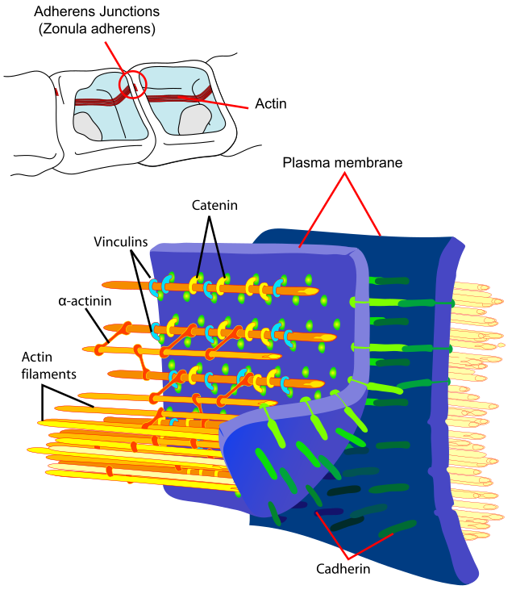
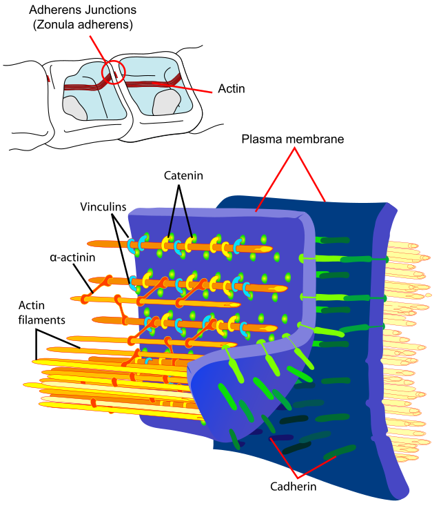

Tight junctions
form a barrier that prevents the passage of molecules between cells,
maintaining distinct apical and basolateral surfaces.
Adherens junctions
connect the actin cytoskeleton of adjacent cells, providing mechanical
strength and maintaining tissue integrity.
Desmosomes
are specialized structures that anchor intermediate filaments of the
cytoskeleton to the plasma membrane, providing strong adhesion between
cells.
Gap junctions
allow direct communication between adjacent cells by forming channels that
permit the passage of ions and small molecules, facilitating intercellular
signaling.
 
